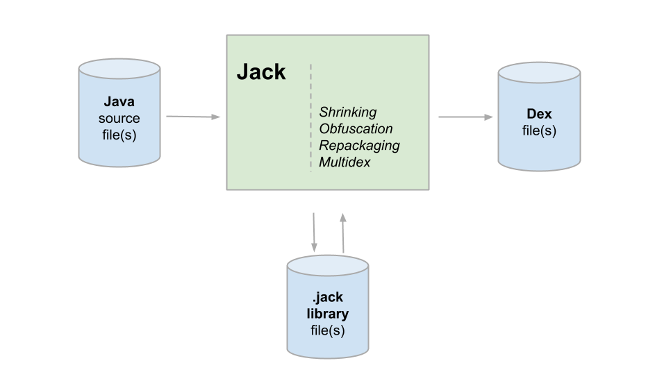
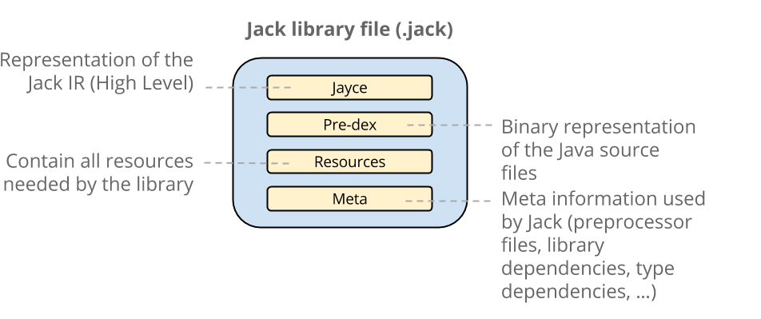
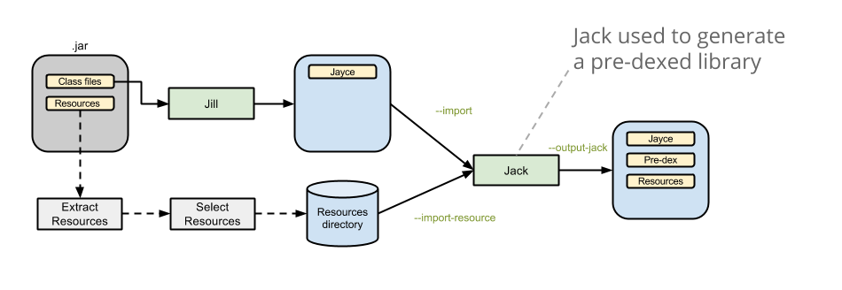
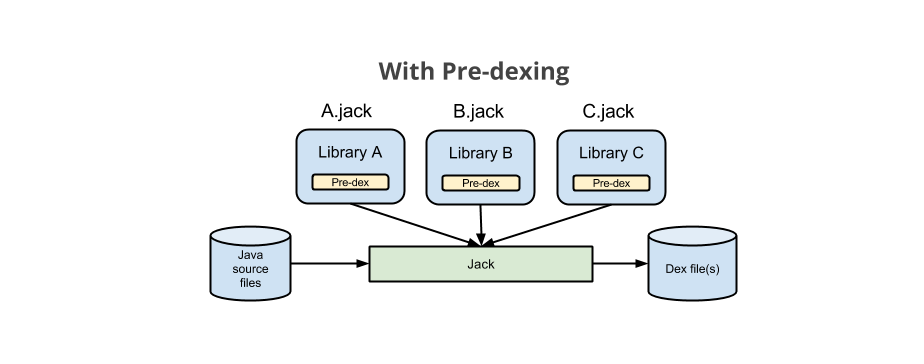

In this document
The Jack toolchain
Jack is a new Android toolchain that compiles Java source into Android dex bytecode. It replaces the previous Android toolchain, which consists of multiple tools, such as javac, ProGuard, jarjar, and dx.
The Jack toolchain provides the following advantages:
- Completely open source
Available in AOSP; partners are welcome to contribute. - Speeds compilation time
Jack has specific supports to reduce compilation time: pre-dexing, incremental compilation and a Jack compilation server. - Handles shrinking, obfuscation, repackaging and multidex
Using a separate package such as ProGuard is no longer necessary.
Note that beginning in Android 7.0 (N), Jack supports code coverage with JaCoCo. See Code Coverage with JaCoCo and Java 8 Language Features for details.
Figure 1. Jack overview
The .jack library format
Jack has its own .jack file format, which contains the pre-compiled dex code for the library, allowing for faster compilation (pre-dex).
Figure 2. Jack library file contents
Jill
The Jill tool translates the existing .jar libraries into the new library format, as shown below.
Figure 3. Workflow to import an existing .jar library
Using Jack in your Android build
You don’t have to do anything differently to use Jack — just use your standard makefile commands to compile the tree or your project. Jack is the default Android build toolchain for M.
The first time Jack is used, it launches a local Jack compilation server on your computer:
- This server brings an intrinsic speedup, because it avoids launching a new host JRE JVM, loading Jack code, initializing Jack and warming up the JIT at each compilation. It also provides very good compilation times during small compilations (e.g. in incremental mode).
- The server is also a short-term solution to control the number of parallel Jack compilations, and so to avoid overloading your computer (memory or disk issue), because it limits the number of parallel compilations.
The Jack server shuts itself down after an idle time without any compilation.
It uses two TCP ports on the localhost interface, and so is not available
externally. All these parameters (number of parallel compilations, timeout,
ports number, etc) can be modified by editing the $HOME/.jack file.
$HOME/.jack file
The $HOME/.jack file contains settings for Jack server variables, in a full bash syntax.
Here are the available settings, with their definitions and default values:
-
SERVER=trueEnable the server feature of Jack. -
SERVER_PORT_SERVICE=8072Set the TCP port number of the server for compilation purposes. -
SERVER_PORT_ADMIN=8073Set the TCP port number of the server for admin purposes. -
SERVER_COUNT=1Unused at present. -
SERVER_NB_COMPILE=4Maximum number of parallel compilations allowed. -
SERVER_TIMEOUT=60Number of idle seconds the server has to wait without any compilation before shutting itself down. -
SERVER_LOG=${SERVER_LOG:=$SERVER_DIR/jack-$SERVER_PORT_SERVICE.log}File where server logs are written. By default, this variable can be overloaded by an environment variable. -
JACK_VM_COMMAND=${JACK_VM_COMMAND:=java}The default command used to launch a JVM on the host. By default, this variable can be overloaded by environment variable.
Jack troubleshooting
If your computer becomes unresponsive during compilation or if you experience Jack compilations failing on “Out of memory error”
You can improve the situation by reducing the number of Jack simultaneous
compilations by editing your $HOME/.jack and changing SERVER_NB_COMPILE to a lower value.
If your compilations are failing on “Cannot launch background server”
The most likely cause is TCP ports are already used on your computer. Try to
change it by editing your $HOME/.jack (SERVER_PORT_SERVICE and SERVER_PORT_ADMIN variables).
If it doesn’t solve the problem, please report and attach your compilation log
and the Jack server log (see ‘Finding the Jack log’ below to know where to find
the server log file). To unblock the situation, disable jack compilation server
by editing your $HOME/.jack and changing SERVER to false. Unfortunately this will significantly slow down your compilation and
may force you to launch make -j with load control (option "-l" of make).
If your compilation gets stuck without any progress
Please report this and give us the following additional information (where possible):
- The command line at which you are stuck.
- The output of this command line.
- The result of executing
jack-admin server-stat. - The
$HOME/.jackfile. - The content of the server log with the server state dumped. To get this —
- Find the Jack background server process by running
jack-admin list-server. - Send a
kill -3command to this server to dump its state into the log file. - To locate the server log file, see ‘Finding the Jack log’ below.
- Find the Jack background server process by running
- The result of executing
ls -lR $TMPDIR/jack-$USER. - The result of running
ps j -U $USER.
You should be able to unblock yourself by killing the Jack background server
(use jack-admin kill-server), and then by removing its temporary directories contained in jack-$USER of your temporary directory (/tmp or $TMPDIR).
If you have any other issues
To report bugs or request features, please use our public issue tracker, available at http://b.android.com, with the Jack tool bug report or Jack tool feature request templates. Please attach the Jack log to the bug report.
Finding the Jack log
|
In case of reproducible Jack failures, you can get a more detailed log by setting one variable, as follows:
$ export ANDROID_JACK_EXTRA_ARGS="--verbose debug --sanity-checks on -D sched.runner=single-threaded"
Then use your standard makefile commands to compile the tree or your project and attach its standard output and error.
To remove detailed build logs use:
$ unset ANDROID_JACK_EXTRA_ARGS
Jack limitations
- The Jack server is mono-user by default, so can be only used by one user on a computer. If it is not the case, please, choose different port numbers for each user and adjust SERVER_NB_COMPILE accordingly. You can also disable the Jack server by setting SERVER=false in your $HOME/.jack.
- CTS compilation is slow due to current vm-tests-tf integration.
- Bytecode manipulation tools, like JaCoCo, are not supported.
Using Jack features
Jack supports Java programming language 1.7 and integrates additional features described below.
Predexing
When generating a Jack library file, the .dex of the library is generated and stored inside the .jack library file as a pre-dex. When compiling, Jack reuses the pre-dex from each library.
All libraries are pre-dexed.
Figure 4. Jack libraries with pre-dex
Limitations
Currently, Jack does not reuse the library pre-dex if shrinking/obfuscation/repackaging is used in the compilation.
Incremental compilation
Incremental compilation means that only components that were touched since the last compilation, and their dependencies, are recompiled. Incremental compilation can be significantly faster than a full compilation when changes are limited to only a limited set of components.
Limitations
Incremental compilation is deactivated when shrinking, obfuscation, repackaging or multi-dex legacy is enabled.
Enabling incremental builds
Currently incremental compilation is not enabled by default. To enable incremental builds, add the following line to the Android.mk file of the project that you want to build incrementally:
LOCAL_JACK_ENABLED := incremental
Note: The first time that you build your project with Jack if some dependencies
are not built, use mma to build them, and after that you can use the standard build command.
Shrinking and Obfuscation
Jack has shrinking and obfuscation support and uses proguard configuration files to enable shrinking and obfuscation features. Here are the supported and ignored options:
Supported common options
Common options include the following:
-
@ -
-include -
-basedirectory -
-injars -
-outjars // only 1 output jar supported -
-libraryjars -
-keep -
-keepclassmembers -
-keepclasseswithmembers -
-keepnames -
-keepclassmembernames -
-keepclasseswithmembernames -
-printseeds
Supported shrinking options
Shrinking options include the following:
-
-dontshrink
Supported obfuscation options
Obfuscation options include the following:
-
-dontobfuscate -
-printmapping -
-applymapping -
-obfuscationdictionary -
-classobfuscationdictionary -
-packageobfuscationdictionary -
-useuniqueclassmembernames -
-dontusemixedcaseclassnames -
-keeppackagenames -
-flattenpackagehierarchy -
-repackageclasses -
-keepattributes -
-adaptclassstrings
Ignored options
Ignored options include the following:
-
-dontoptimize // Jack does not optimize -
-dontpreverify // Jack does not preverify -
-skipnonpubliclibraryclasses -
-dontskipnonpubliclibraryclasses -
-dontskipnonpubliclibraryclassmembers -
-keepdirectories -
-target -
-forceprocessing -
-printusage -
-whyareyoukeeping -
-optimizations -
-optimizationpasses -
-assumenosideeffects -
-allowaccessmodification -
-mergeinterfacesaggressively -
-overloadaggressively -
-microedition -
-verbose -
-dontnote -
-dontwarn -
-ignorewarnings -
-printconfiguration -
-dump
Note: Other options will generate an error.
Repackaging
Jack uses jarjar configuration files to do the repackaging.
Note: Jack is compatible with "rule" rule types, but is not compatible with "zap" or "keep" rule types. If you need "zap" or "keep" rule types please file a feature request with a description of how you use the feature in your app.
Multidex support
Since dex files are limited to 65K methods, apps with over 65K methods must be split into multiple dex files. (See ‘Building Apps with Over 65K Methods’ for more information about multidex.)
Jack offers native and legacy multidex support.